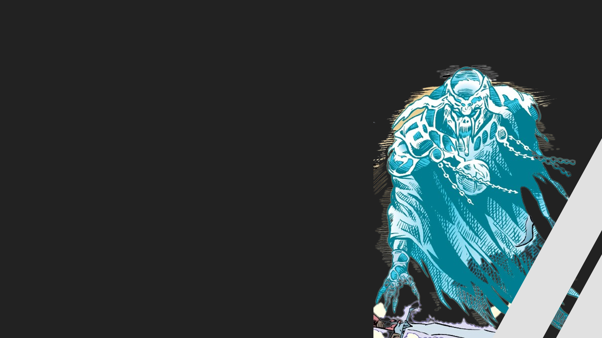

foi um governo galáctico que existia antes do estabelecimento da República Galáctica, que viria a se formar após a reestruturação daquela em 1.032 ABY, milhares de anos antes das Guerras Clônicas. Com o apoio da Ordem Jedi, a República se envolveu em múltiplos conflitos com muitos oponentes como os Sith, os Mandalorianos e o Império Escravista Zygerriano. Após o último conflito entre os Jedi e os Sith, a Velha República foi dissolvida dando lugar a República Galáctica. O novo governo uniu a galáxia sob um regime democrático até a ascensão da Nova Ordem pelo Império Galáctico.
Principais integrantes

marka Ragnos
era um Lorde Negro dos Sith, que viveu durante o tempo do primeiro Império Sith, nascido muito antes de 5.100 ABY, e, em torno deste mesmo ano ele duelou o Lorde Sith Simus pelo título de Lorde Negro dos Sith e o controle do Império Sith. Ragnos derrotou Simus, que foi decapitado na batalha.
Darth revan
foi um Cavaleiro Jedi Humano que sucumbiu ao lado sombrio durante as Guerras Mandalorianas. Tendo grandes habilidades táticas, ele liderou a República Galáctica até a vitória sobre os Mandalorianos. Mas após a guerra, ele assumiu o título de "Lorde Negro dos Sith", fundando um poderoso Império Sith, e colocou suas forças contra a República, gerando o conflito conhecido como a Guerra Civil Jedi. A invasão eficiente e brutal de Darth Revan era parte de um plano para proteger a Galáxia de uma ameaça conhecida como os "Verdadeiros Sith".
Darth Malak
foi um Cavaleiro Jedi chamado Alek Squinquargesimus que passou para o Lado Sombrio da Força após ser seduzido por ensinamentos Sith durante as Guerras Mandalorianas. No fim da guerra, ele e seu amigo Revan lideraram suas forças militares combinadas nas Regiões Desconhecidas, onde eles fundaram um poderoso novo Império Sith para combater a frágil República Galáctica. Após se tornar um Lorde Sith, Darth Malak serviu por um tempo como o aprendiz de Darth Revan, mas ele é mais conhecido por seu breve e brutal tempo como o Lorde Negro dos Sith durante a Guerra Civil Jedi.
Darth bane
foi um lendário Lorde Sombrio dos Sith Humano e o único sobrevivente da destruição da Irmandade da Escuridão pelas mãos da Ordem Jedi durante a Guerra Jedi-Sith, mil anos antes das Guerras Clônicas. Como o único Sith sobrevivente, Bane reconheceu que as lutas internas dos Sith tinham os enfraquecido ao ponto de os Jedi poderem destruí-los. A fim de corrigir isso, Bane reformou os Sith e criou a Regra de Dois.
onde a aliança apareceu na saga?
Star Wars: The Clone Wars – "The Mandalore Plot" (primeira menção)
Star Wars: The Clone Wars – "Citadel Rescue" (apenas menção)
Star Wars: The Clone Wars – "A Test of Strength" (Apenas emblema)
Tarkin (apenas menção)
Last Shot (apenas menção)
The Mighty Chewbacca in the Forest of Fear! (apenas menção)
Guardians of the Whills (apenas menção)
A Arma de um Jedi: Uma Aventura de Luke Skywalker (apenas menção)
.png)